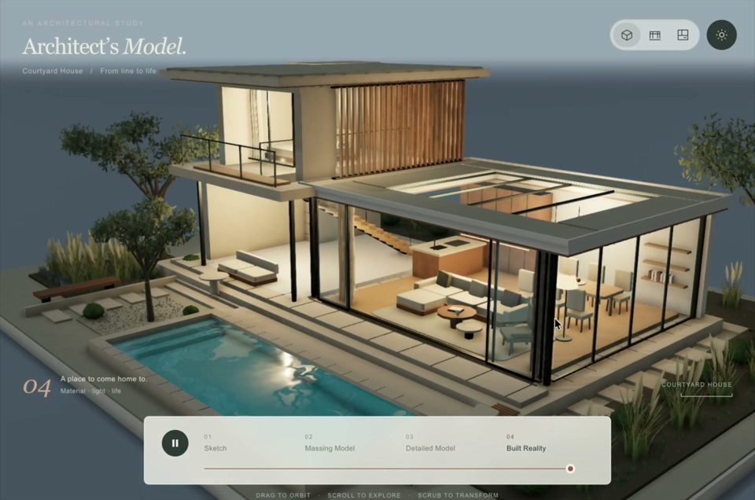
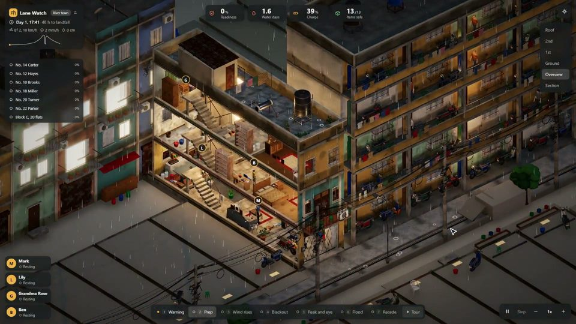
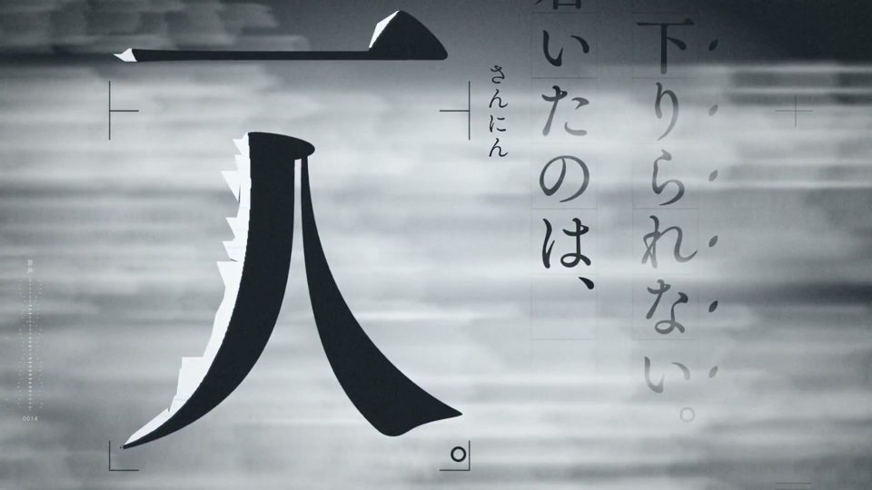

Jingjian · Awesome AI Video Prompts
Hand-picked top-tier AI videos, images and AI-coded works with their prompts — searchable by style, mood and genre.
Works an LLM built by writing code (three.js, WebGL, shaders…), including code-rendered videos.

XFrom Sketch to Home
Techartist · Opus 5.5 (Claude)
Commercial / ad look Product Daily life
 X
XMechanical Flowers
Bee · Gemini 4 Carbon
Surreal / dreamcore Sci-fi Nature / landscape
 X
XMist Cat
Bee · Gemini 4 Carbon
Chinese ink / guofeng Surreal / dreamcore Pets / animals Fantasy / myth
 X
XMisty Swamp
Chetan Ankola · GPT-6 Astra
Cinematic realism Nature / landscape
 X
XStill Water Cabin
Mohamed · Codex (GPT)
Game CG Daily life Nature / landscape
 X
XQi Baishi's Shrimp
Joshua Guo · Opus 5.5 (Claude)
Chinese ink / guofeng Chinese Pets / animals

XVietnamese Tube House Typhoon
An Xuan · Opus 5.5 (Claude)
Game CG Other regions Disaster Daily life
 X
XThe Pop-Up Energy Book
Techartist · Opus 5.5 (Claude)
Watercolor storybook Product
 X
XNeon City in One Run
Ainthropos · Opus 5.5 (Claude) + Blender MCP
Cyberpunk neon Sci-fi Travel / city
 X
XVideo Into Shader
gokaygokay · Claude Opus 5.5
3D cartoon European Travel / city
 X
XPhysics Campfire
Leon Lin · Opus 5.5 (Claude)
Cinematic realism Nature / landscape
 X
XImpressionist Mountain Lake
Brian Gruber · Opus 5.5 (Claude)
Cinematic realism Nature / landscape
 X
XNight Boat, Cherry River
Meng To · Claude Opus 5.5
Game CG Japanese Nature / landscape Travel / city
 X
XMoonlit Creek Stones
Chetan Ankola · GPT-6 Astra
Game CG Japanese Nature / landscape
 X
XVerdant Forest
Leon Lin · GPT-6 Astra
Game CG Nature / landscape
 X
XNagi, Watching Waves
Noxel · OpenAI（作者称“dotくん”）
Cinematic realism Japanese Nature / landscape
 XPrompt
XPromptCity of Athena
Leon Lin · Claude Code (Claude Opus 5.5)
Game CG European Historical / period Fantasy / myth
 X
XLight of the Shallows
ついはじめ | Hajime Tsui · Claude Code (Claude Opus 5.5)
Cinematic realism Nature / landscape
 X
XContour Earth
Zsolt Kacso · Claude Code (Fable)
Game CG Nature / landscape
 X
XUnderstory
Zsolt Kacso · GPT-5.6 Sol
Cinematic realism Nature / landscape

XThe Frozen Notebook
aicreataro · Claude Opus 5.5（文字与动效）+ Gemini TTS（旁白）
Black and white Japanese Thriller / mystery
 X
XLine-Drawn Little City
Khalid · Claude Opus 5.5
Game CG Travel / city
 X
XPine & Parcel
Mohamed · Codex
3D cartoon European Travel / city Nature / landscape
 X
XParticle Chamber
Brice · Claude
Surreal / dreamcore Sci-fi